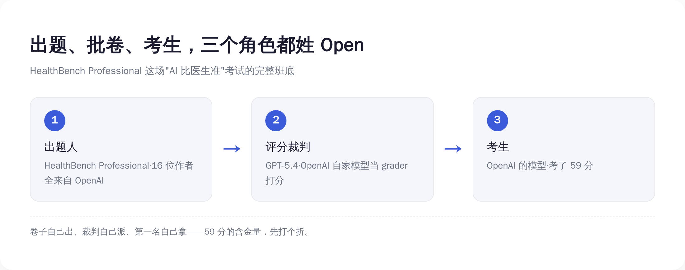
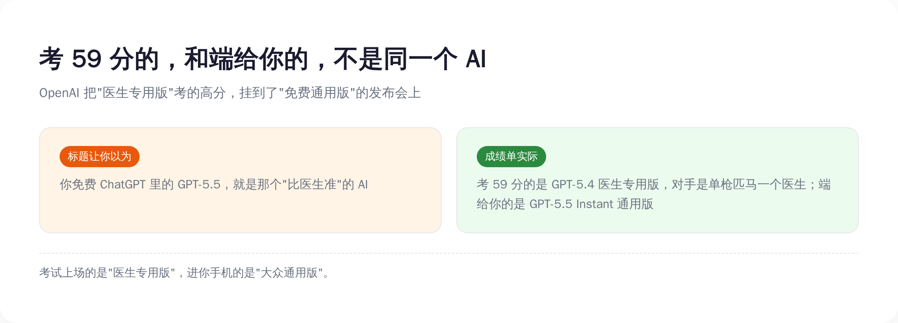
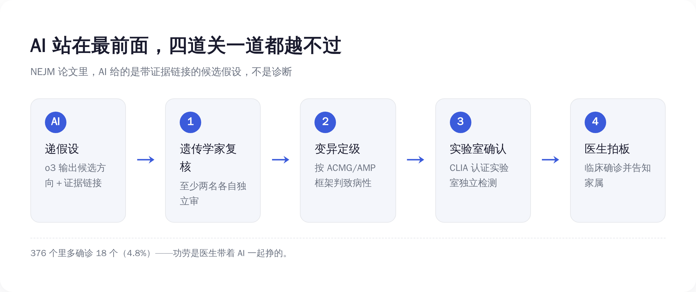
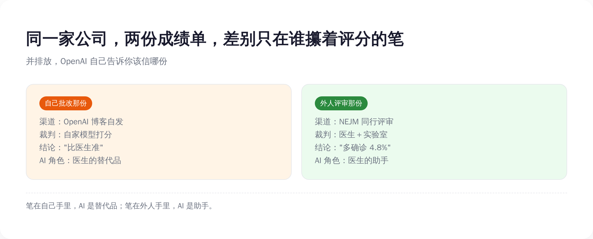

生成 Prompt
two contrasting medical report cards placed side by side on a desk, the left card glowing bright and boastful, the right card modest and stamped with an official seal, split composition, flat design, minimalist editorial illustration, tech style, blue and white color palette with a single orange accent, soft shadows, no text, no letters, no numbers, clean white background
一、先把吹的那份认了：59 比 43.7，AI 确实赢了
拆一份成绩单，得先承认它硬的地方。不然就成了为黑而黑，那是耍流氓。
OpenAI 这次甩出来的数字，单看是真不虚。
先是一个 71%。OpenAI 说，过去大约两个月里，ChatGPT 上那些健康类回答中，被标记"含至少一个事实性错误"的比例，下降了 71%。错误率砍掉七成，听着确实是质的飞跃。
然后是那个最唬人的对比实验。OpenAI 找了一批医生，让他们给一批有代表性的健康问题写标准答案——时间随便花，网随便查，唯一不许用的就是 AI。然后再找另一批医生，盲评：同一个问题，AI 答的和人医生答的摆在一起，哪个更好。一共评了 3500 条回答。结果是，GPT-5.5 在准确性、沟通质量、完整性、对做健康决策的帮助，四个维度全部赢过医生手写的答案。
还有那个 59 分。在 OpenAI 一个叫 HealthBench Professional 的专业医疗评测里，它的模型拿了 59.0 分，作为对照的医生基线只有 43.7 分。其中"写病历、写文书"这类任务，AI 64.1 分对医生 32.1 分，几乎是翻倍碾压。这个差距，统计学上 p 值小到 3.7×10⁻¹⁰，基本可以排除"碰巧赢的"。
这些数字摆出来，你很难嘴硬。AI 在处理医学文字这件事上，又快又全，是真本事。
而且 OpenAI 反复强调，这次更新是给免费用户的。GPT-5.5 早就是 ChatGPT 的默认模型，不充钱也能用。230 万——不对，是它自报的每周 2.3 亿人在 ChatGPT 上问健康相关的问题。一个比医生答得还好的东西，免费向几亿人开放。
这话听着是不是特别提气？特别想转给那个一生病就乱搜、搜完更焦虑的朋友：你看，以后别瞎搜了，直接问 AI，专家说了，比医生还准。
提气归提气，先在心里记一笔账：这份告诉你"AI 比医生准"的成绩单，是谁出的题，又是谁批的卷？
二、出题的、批卷的、考生，三个都姓 Open
把那份成绩单翻到背面，问题就出来了。
HealthBench Professional 这套医疗考卷，是谁编的？是 OpenAI。论文署名的 16 个作者，从通讯作者到打杂的，全部来自 OpenAI，没有一家外部医院、外部大学联署。
那批卷子的，又是谁？这里是最骚的一步。这套评测不是请医生一份份人工打分的——是让一个 AI 模型当裁判，照着评分标准给答案打分。而这个当裁判的模型，是 GPT-5.4。也是 OpenAI 自己家的。
你把这条链子捋一遍：题，OpenAI 出的；给答案打分的裁判，是 OpenAI 的模型；考出 59 分的考生，还是 OpenAI 的模型。出题人、裁判、考生，三个角色，全姓 Open。
这就好比一场考试，卷子是你出的，改卷的是你弟弟，考第一名的是你儿子。然后你开发布会宣布：经过严格测评，我儿子的水平超过了在场所有老师。

OpenAI 当然会辩解：评分标准（rubric）是真医生写的，一条条临床要点，迭代了好几轮。这没错。但写标准的是医生，真正一份份对着标准打分、决定 59 还是 43 的，是那个 AI 裁判。标准再客观，最后捏着分数笔的手，姓什么很重要。
更要命的是，这块牌子还不是什么"医疗金标准"。它是开放的，谁都能来刷分——今年 1 月，中国的百川 M3 就在同款 HealthBench 上反超过 OpenAI 当时的最强模型。一块能被对手刷过去的评测，本质就是个竞争靶子：靶子上的环数，证明你枪法比对手准，证明不了你能上手术台。何况这块靶子还是 OpenAI 自己造的、长期自家模型霸榜——值得起疑的，从来不是谁分高，是谁攥着这套打分的规则。
这一节不是要说 AI 在装。AI 处理医学文字的能力是真的。这一节要说的是：当一家公司自己出题、用自己的模型批卷、再发布自己的胜利时，那个"赢"字，含金量是要打折的。打多少折，下一节有个更直接的证据——连 OpenAI 自己，都没敢把这张卷子端到你面前。
三、考 59 分的那个 AI，根本不是端给你的那个
这是整件事里最绕、也最值得停下来看的地方。说穿了就一句：考试上场的，和进你手机的，根本是两个 AI。版本号你不用记，记住这层错位就行。
考出 59 分、把医生按在地上摩擦的，是哪个 AI？翻 OpenAI 自己的论文，那个版本叫 GPT-5.4，而且是 "ChatGPT for Clinicians"——一个专门给临床医生用的版本。它的对手呢？是单枪匹马、一个人作答的医生。
而 6 月 18 日那篇官网博文，吹的、要端到你免费 ChatGPT 里的，是 GPT-5.5 Instant。一个面向所有普通人的通用版。
发现没有？考试时上场的是"医生专用版"，发奖时领奖、进你手机的是"大众通用版"。OpenAI 把一个专业版考出的高分，挂到了一个通用版的发布会上。考的和卖的，不是同一个东西。

这还只是第一层错配。第二层更直接：对照实验里，医生是一个人、没有 AI 帮忙、单独答题；现实里真正的好医生，是会查文献、会会诊、会拿 AI 当工具的。让一个被绑住手脚的单人医生，去对打一个调好了的模型——这场比试，从设计上就是奔着 AI 赢去的。
而最诚实的一句话，藏在 OpenAI 自己的免责声明里。官网原文写着：健康功能"旨在支持、而非替代医疗护理，不用于诊断或治疗"。
你品品这个拧巴：左手发布会上说我比医生准，右手用户协议里写着别拿我来诊断。一家公司同时讲这两句话，不是精神分裂，是精算——能吹的地方一个字不少，要担责的地方一个字不沾。
连 Sam Altman 自己都露过底。他公开说过，ChatGPT 多数时候是比多数医生更强的诊断工具；但紧接着同一场，他又说了下半句——"我真的不想在没有人类医生在场的情况下，把自己的医疗命运交给 ChatGPT。"
老板亲自给你打了样：这东西可以信，但别拿自己的命去信。这话他自己懂。可这半句，从来不会印在发布会的大屏幕上。
四、同一天那份规矩的成绩单，AI 连诊断都不许下
现在翻到第二份，那份没人转的。
同一天，OpenAI 和波士顿儿童医院、哈佛，一起在 NEJM AI 上发了篇论文。研究对象是 376 个孩子——注意，这 376 个，全是已经做过基因检测、看过专科、医生们用尽办法还是没查出病因的疑难病例。是医学体系里被剩下的那批人。
AI 在这里干了什么？它用的是 o3 Deep Research 模型，输入病历、症状、预筛的基因清单，输出的不是诊断，而是"带证据链接的候选假设"。说人话：AI 不下结论，它只递线索——"我怀疑可能是这几个方向，证据在这儿，你们看"。然后把球踢回给医生。
接下来这套流程，才是这篇论文最硬的地方。AI 递上来的假设，要过四道关：
第一关，至少两名临床遗传学家，各自独立审。第二关，按国际通行的 ACMG/AMP 框架（一套给基因变异定"致病等级"的国际标准），把可疑的基因变异定级，够不够得上"致病"。第三关，送 CLIA 认证（美国临床实验室的资质体系）的实验室，独立做检测确认。第四关，临床团队拍板，再把结果告诉家属。

四道关，AI 站在最前面，一道都越不过去。它只能把线索递到第一关门口，剩下三关全是人和实验室在走。
最后的成果是：376 个里，多确诊了 18 个，4.8%。分布是 10 例罕见神经发育障碍、4 例神经肌肉病、2 例儿童猝死、2 例早发精神病——每一个，都是一个本来要在黑暗里继续等下去的家庭。
这篇论文的结论部分，OpenAI 写了一句和发布会画风完全相反的话：本研究不能作为"患者、医生或用户应该用 OpenAI 模型来诊断疾病或做医疗决策"的证据；模型没有诊断任何一个参与者，每一个诊断，都由合格的临床专家通过既定流程作出。
它甚至主动认怂，列了一堆没做到的：这是回顾性研究、没测假阳性会带来多少负担、没算省了多少时间和成本。
你看，把外人（NEJM 的同行评审）请进来当裁判，AI 的角色立刻就老实了——从"比医生准"的替代品，变成了"帮医生多找到 4.8%"的助手。一个字都不敢吹大。
五、同一家公司，两副面孔，差别只在谁攥着评分的笔
把这两份成绩单并排钉在墙上，结论就自己跳出来了。

左边这份，OpenAI 自己出题、用自己的模型批卷、自己在博客发布，没人管。于是 AI 成了"超过医生"的替代品，标题敢用最大号字。
右边这份，送进 NEJM 让外人评审，规则是医生复核、实验室确认、专家拍板。于是 AI 缩回到"给候选假设"的助手，连"诊断"两个字都不敢碰。
技术是同一拨技术，公司是同一家公司。唯一变的，是评分的那支笔，攥在谁手里。笔在自己手里，AI 就是医生的替代品；笔在外人手里，AI 就只敢当医生的助手。
有人会较真：这两份研究本来就不是一回事，一个考的是回答健康问题的文字质量，一个测的是罕见病里找线索的本事，苹果跟橘子，没法直接比。没错。可正因为是两件事，OpenAI 在这两件事上挑的说法，才更露馅——同样是它家的 AI、同样有它深度参与，能自己说了算的场合，它就喊"超过医生"；得过外人那一关的场合，它就乖乖退回"给医生打下手"。
OpenAI 没有撒谎。两份成绩单的数字可能都是真的。它只是非常清楚地知道，哪份能拿去做免费用户的增长故事，哪份得规规矩矩走学术程序。能吹的吹满，要担责的收紧——这不叫造假，这叫公关。比造假高级，也比造假难防。
所以下次再刷到"AI 看病比医生准"这种标题，先别急着焦虑或狂喜，问三句话就行：这个 benchmark 是谁建的？给答案打分的裁判是谁？过没过外部同行评审？三句话问下来，多数"碾压医生"的神话，都会缩水成"在某个自己画的靶子上多打了几环"。
AI 真能帮上医疗的忙，那份 NEJM 论文已经证明了——在专家都束手的地方，多救回 18 个孩子，这是实打实的功德。但功德是医生带着 AI 一起挣的，不是 AI 一个人挣的。
把免费 ChatGPT 给你的健康回答，当成一条值得拿去问医生的线索，可以。当成诊断，别。
这不是我说的。这是 OpenAI 自己，用同一天发的两份成绩单，亲口告诉你的。